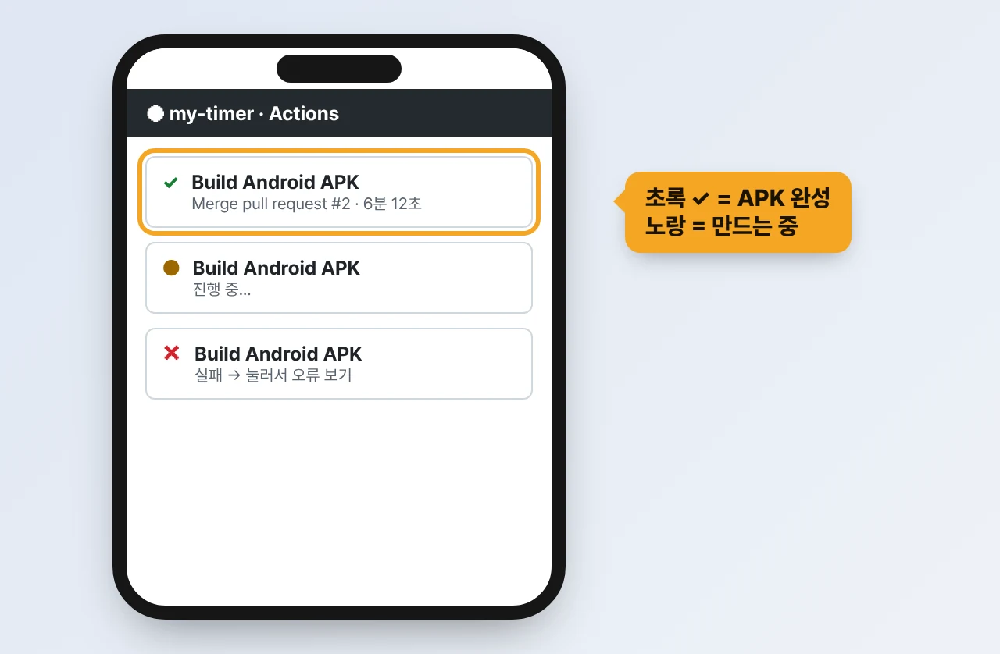
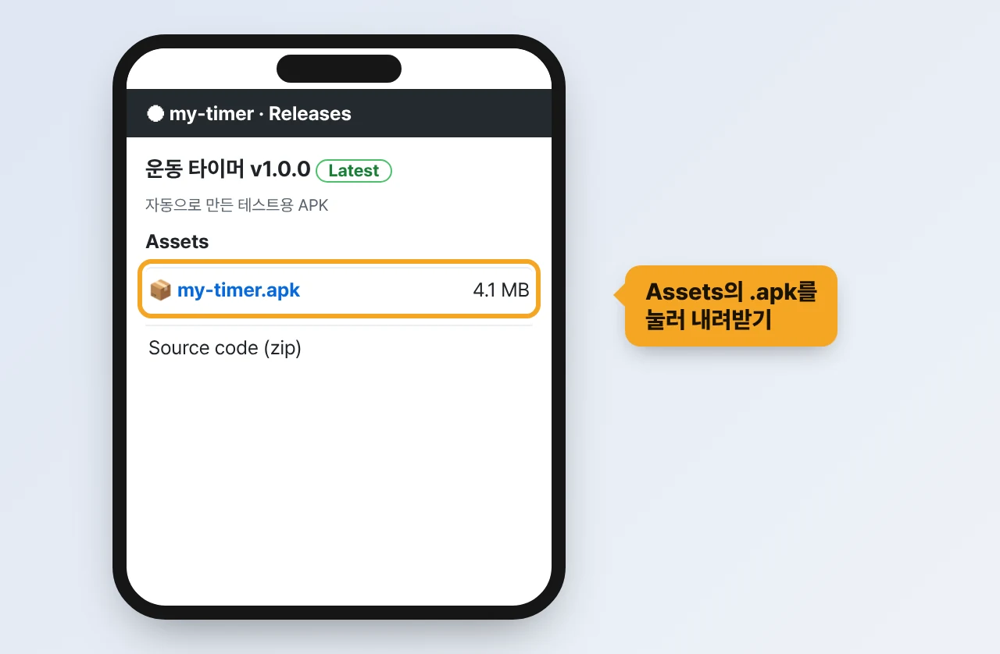
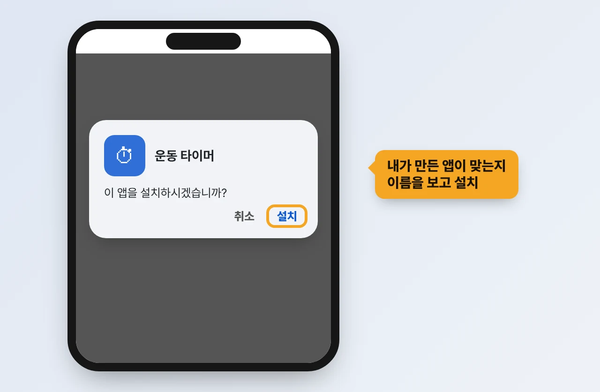
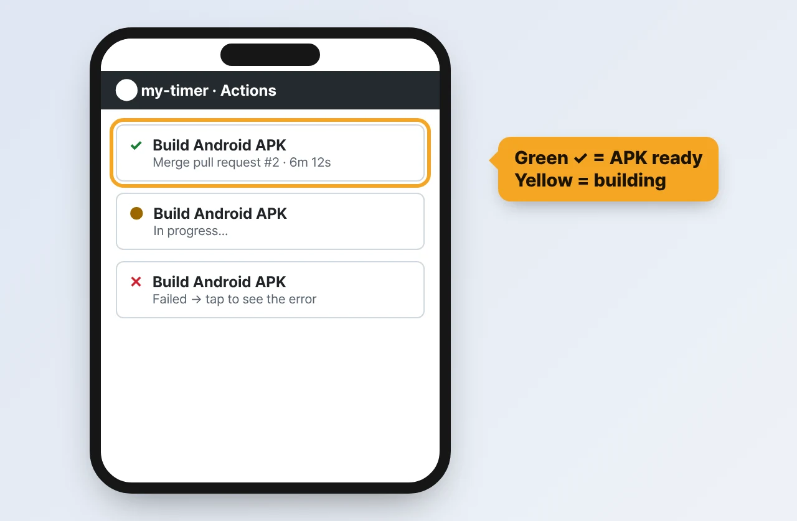
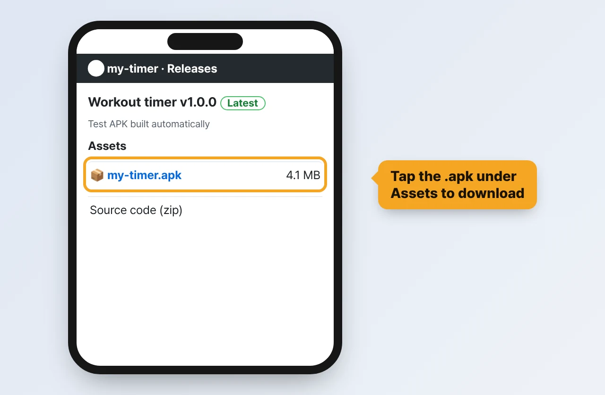
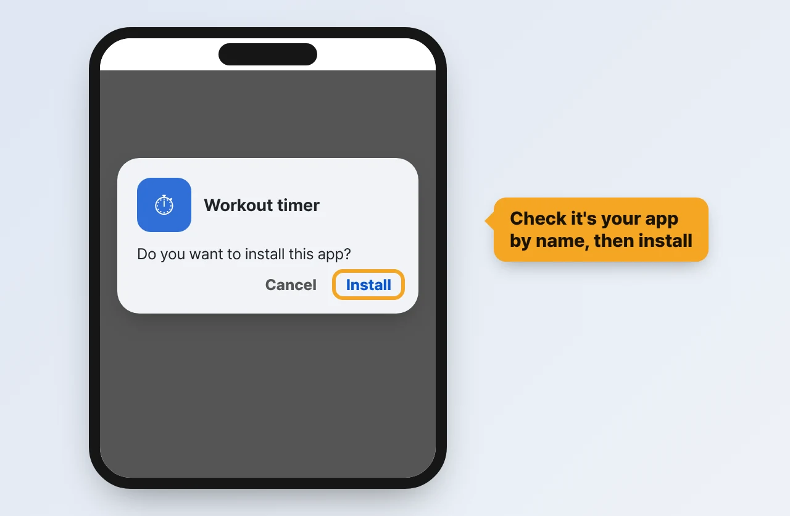

👆 이 내용은 버튼 따라 하는 실습으로도 있어요. 처음이라면 실습으로 직접 해 보고, 이 글은 복습할 때 보세요. 실습 시작하기 →
※ 글 속 그림은 따라 하기 쉽도록 그린 예시입니다. 실제 화면과 모양·글자가 조금 다를 수 있어요.
이게 뭔가요?
앱 3편에서 만든 운동 타이머를 안드로이드 앱(APK)으로 만들어 휴대폰에 진짜 앱처럼 설치해요. 컴퓨터에 큰 프로그램을 깔 필요 없이, 이번에도 휴대폰만으로 할 수 있어요. 얼른닷컴의 EarllnCore가 바로 이 방법으로 만든 앱이에요.
| 낱말 | 뜻 |
|---|---|
| APK | 안드로이드 앱 설치 파일. 앱 스토어 없이 직접 설치할 수 있어요 |
| Capacitor | 웹앱을 안드로이드 앱 상자로 감싸는 도구. 화면과 기능은 그대로예요 |
| GitHub Actions | APK를 대신 만들어 주는 로봇. 원래 필요한 Android Studio 대신 클라우드에서 만들어요 |
| 서명 | "이 앱은 내가 만들었다"는 도장. 같은 도장이어야 업데이트가 덮어 설치돼요 |
0. 먼저 준비할 것
- 앱 3편의 my-timer 저장소 (공개, Claude 앱 설치됨)
- 안드로이드 휴대폰
1. 휴대폰으로 말해서 만들게 하기
휴대폰 Claude 앱 → Code → 저장소 my-timer를 고르고 보내세요. 파일이 많이 생겨서 10분 넘게 걸릴 수 있어요.
이 웹앱을 안드로이드 앱(APK)으로 만들어줘. Capacitor로 감싸고 앱 이름은 '운동 타이머'. main에 병합될 때마다 GitHub Actions가 APK를 만들어 Releases에 올리게 해줘. 지금은 테스트용(debug) APK로 하고, 서명 키 파일이나 비밀번호는 저장소에 절대 넣지 마2. PR 확인하고 병합하기
Create PR → GitHub의 PR → Files changed. 파일이 수십 개라 다 읽지 않아도 돼요. 두 가지만 확인하세요.
- .github/workflows/ 안에 APK를 만드는 파일(예: android.yml)이 있다.
- .jks, .keystore, password 같은 이름의 파일이 없다.
괜찮으면 Merge pull request → Confirm merge.
3. 로봇(Actions)이 APK를 만드는 동안 기다리기
저장소 → Actions 탭. 노란 점이면 만드는 중(보통 5~10분), 초록 ✓면 완성이에요.

빨간 ✕(실패)가 나오면 그 줄을 눌러 오류 글을 복사하거나 캡처해서, 같은 대화에 "Actions가 실패했어"와 함께 보내세요. 새 PR을 병합하면 다시 만들어요.
4. 내려받아 설치하기
- 안드로이드 휴대폰 브라우저로 저장소 → Releases → 맨 위 릴리스 → Assets의 .apk를 내려받아요.
- 파일을 열면 "출처를 알 수 없는 앱" 설치를 허용할지 물어요. 브라우저에 이번만 허용하세요.
- 설치를 누르면 앱 목록에 운동 타이머가 생겨요.


5. 고칠 때 · 다른 사람에게 나눠 줄 때
- 고칠 때: 같은 대화에서 말하고 → PR 병합 → Actions 완성 → 새 APK 설치.
- 테스트용(debug) APK는 업데이트가 안 될 수 있어요. 로봇이 매번 새 도장을 찍기 때문이에요. '앱이 설치되지 않았습니다'가 나오면 앱을 지우고 다시 설치하세요. (기록이 지워질 수 있어요)
- 나눠 줄 때: 나만의 서명 키가 필요해요. Claude에게 "릴리스 서명 키로 서명하게 바꾸는 방법을 알려줘"라고 물어보세요. 키와 비밀번호는 저장소가 아니라 GitHub Settings → Secrets and variables → Actions에 넣고, 따로 안전하게 보관하세요.
오늘 배운 것
- Capacitor로 감싸면 웹앱이 안드로이드 앱이 되고, Actions 로봇이 APK를 만들어 Releases에 올린다.
- 병합 전에 키 파일이 없는지 본다. 서명 키는 Secrets에.
- APK는 내가 만든 앱일 때만 설치를 허용한다.
이것으로 앱 만들기 과정을 모두 마쳤어요. 이제 나만의 아이디어로 앱을 만들어 보세요!
* The pictures are drawn examples to make the steps easy to follow. Real screens may look slightly different.
What is this?
Turn the workout timer from App guide 3 into an Android app (APK) and install it like a real app. No big program on a computer needed; again, just your phone is enough. Earlln's EarllnCore was made exactly this way.
| Word | Meaning |
|---|---|
| APK | An Android app install file. You can install it without an app store |
| Capacitor | A tool that wraps a web app in an Android app box. Screens and features stay the same |
| GitHub Actions | A robot that builds the APK for you, in the cloud, instead of Android Studio |
| Signing | A stamp saying "I made this app". Updates install over the old app only with the same stamp |
0. What you need
- The my-timer repository from App guide 3 (public, with the Claude app installed)
- An Android phone
1. Describe it on your phone and have it built
Claude phone app → Code → pick the repository my-timer and send this. It creates many files and can take over 10 minutes.
Turn this web app into an Android app (APK). Wrap it with Capacitor and name the app 'Workout timer'. Every time something is merged into main, have GitHub Actions build the APK and upload it to Releases. Use a test (debug) APK for now, and never put signing key files or passwords in the repository2. Check the PR and merge
Create PR → the PR on GitHub → Files changed. There are dozens of files, so don't read them all. Check just two things.
- There's a file that builds the APK inside .github/workflows/ (e.g. android.yml).
- There are no files named like .jks, .keystore or password.
If it's fine: Merge pull request → Confirm merge.
3. Wait while the robot (Actions) builds the APK
Repository → Actions tab. A yellow dot means it's building (usually 5–10 minutes); a green ✓ means it's done.

If you get a red ✕ (failed), tap that row, copy the error text or take a screenshot, and send it to the same chat with "Actions failed". Merge the new PR and it builds again.
4. Download and install
- On your Android phone's browser: repository → Releases → the top release → download the .apk under Assets.
- Opening the file asks whether to allow installing "unknown apps". Allow it for your browser just this once.
- Tap Install and Workout timer appears in your app list.


5. Updating · sharing with others
- Updating: say it in the same chat → merge the PR → Actions finishes → install the new APK.
- A test (debug) APK may not update in place: the robot uses a new stamp each time. If you see 'App not installed', uninstall the app and install again. (Records may be lost)
- Sharing: you need your own signing key. Ask Claude "How do I switch to signing with a release key?" The key and password go in GitHub Settings → Secrets and variables → Actions, never in the repository, and keep a safe copy elsewhere.
What you learned today
- Wrapped with Capacitor, a web app becomes an Android app; the Actions robot builds the APK and posts it to Releases.
- Before merging, check there are no key files. Signing keys go in Secrets.
- Allow installing an APK only for your own app.
That completes the app course. Now build an app from your own idea!